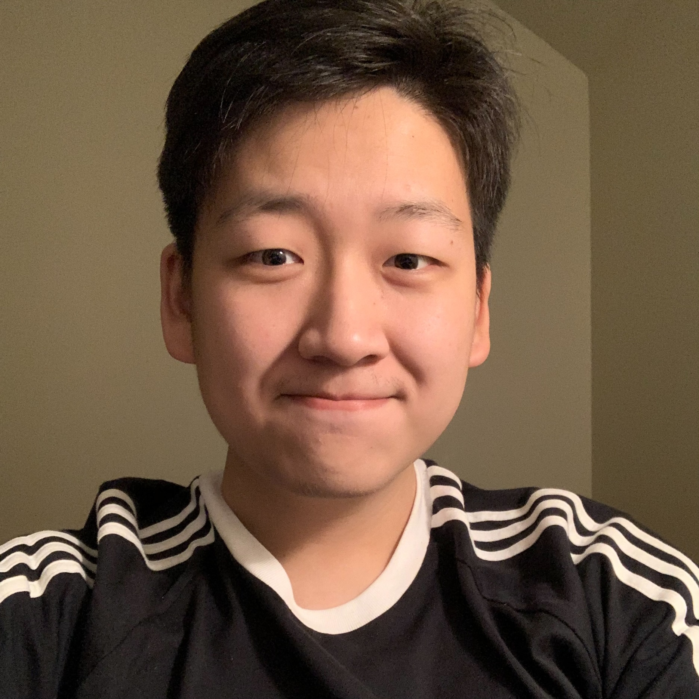
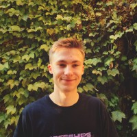

Purdue's Cognitive Robot Autonomy & Learning (CoRAL) Lab
Welcome to PurdueCS CoRAL Lab!

Constrained Manipulation

Autonomous Visual Navigation

Task and Motion Planning
Vision-based Semantic Grasping
Human-Robot Collaboration
Scalable Deep Reinforcement Learning
❮
❯
Active Projects
We perform fundamental and applied research in machine learning, computer vision, and artificial intelligence to design and develop intelligent robotic systems.
Our work touches on various problems, including dextrous manipulation and control, mobile navigation, human-robot collaboration, autonomous driving, and healthcare.
The active projects include, but are not limited to:
- Planning for Scalable Reinforcement Learning
- Optimization-based Multi-agent Task and Motion planning
- Learning-based Deformable Object Manipulation
- Fast Visual Navigation in Dynamic, Adversarial Environments
- Multimodal Tactile-Visual Active Sensing
- Vision-based Semantic Robot Grasping & Control
- Human-centered Robot Mobile Manipulation for Collaboration Tasks
- Differentiable Simulation for Visuomotor Control
Current Members
 |
Professor Ahmed H. Qureshi
Director, Cognitive Robot Autonomy and Learning (CoRAL) Lab
Ph.D., Electrical and Computer Engineering, UC San Diego
M.S. Engineering, Osaka University
B.S. Electrical Engineering, National University of Science and Technology
Email: ahqureshi AT purdue DOT edu
Office: HAAS 152 | Office Tel: (765)-496-3071
|
|
 |
Zixing Wang
Ph.D. Student, Computer Science, Purdue University
M.S. Robotics, University of Minnesota
B.A. Computer Science, University of Minnesota
Research Project: Collaborative (human-in-the-loop) Planning & Control
Email: wang5389 AT purdue DOT edu
|
 |
Ruiqi Ni
Ph.D. Student, Computer Science, Purdue University
B.S. Computational Mathematics, University of Science and Technology of China
Research Project: Differentiable Simulation & Optimization for Visuomotor Control
Email: ni117 AT purdue DOT edu
|
|
|
Hanwen Ren
Ph.D. Student, Computer Science, Purdue University
M.S. Computer Engineering, Brown University
B.S. Electrical and Computer Engineering, Shanghai Jiao Tong University
Research Project: Dense Active Sensing in Cluttered Environments
Email: ren221 AT purdue DOT edu
|
|
|
Jacob Johnson
Ph.D. Student, Electrical & Computer Engineering, UC San Diego
B. Tech. Electronics and Communication Engineering, IIT Guwahati
Research Project: Differentiable Neural Motion Planning
Email: jjj025 AT ucsd DOT edu
Co-Advisor(s): Michael C. Yip (UCSD)
|
|
|
Zhiquan Wang
Ph.D. Student, Computer Graphics Technology, Purdue University
B.S. Computer Science, Nanjing Tech University
Research Project: Reinforcement Learning-based Procedural Animation
Email: wang4490 AT purdue DOT edu
Co-Advisor(s): Bedrich Benes (Purdue)
|
|
|
Abhinav K. Keshari
M.S. Student, Computer Engineering, Purdue University
B.Tech ECE, IIT Roorkee
Research Project: Semantic Robot Grasping
Email: akeshari AT purdue DOT edu
|
|
|
Kendal Norman
M.S. Student, Computer Science, Purdue University
B.S. Computer Science, Purdue University
Research Project: Long-horizon Task Planning in Partially-observable Environments
Email: norman17 AT purdue DOT edu
|
|
|
Prabhpreet Dhir (Preet Dhir)
M.S. Student, Aeronautics and Astronautics Engineering, Purdue University
B.S. Aeronautics and Astronautics Engineering, Purdue University
Research Project: Multi-agent Task Allocation
Email: pdhir AT purdue DOT edu
|
|
|
Kartik A. Pant
M.S. Student, Aeronautics and Astronautics Engineering, Purdue University
B.Tech Electronics Engineering, IIT BHU Varanasibr
Research Project: Autonomous Visual Navigation in Cluttered Environments
Email: kpant AT purdue DOT edu
|
|
 |
Daniel Lawson
B.S Student, Computer Science, Purdue University
Research Project: Planning for Scalable Reinforcement Learning
Email: lawson95 AT purdue DOT edu
|
Prospective Students, Scholars & Collaborators
We are actively looking for students/scholars at all levels (BS/MS/PhDs/Post-docs) with a strong relevant background in Robotics, Machine Learning, and Computer Vision. If you are interested in working with me, please fill out this form. Non-Purdue students who are seeking M.S./Ph.D. positions will have to apply online through the PurdueCS admission portal and mention Prof. Ahmed H. Qureshi as a potential advisor.
For collaborations and joint partnership: Our work aligns closely with the industry for solving a wide range of collaborative robotics and autonomous driving tasks in the natural dynamic world. If you have an idea or are interested in collaboration, please contact us.
|